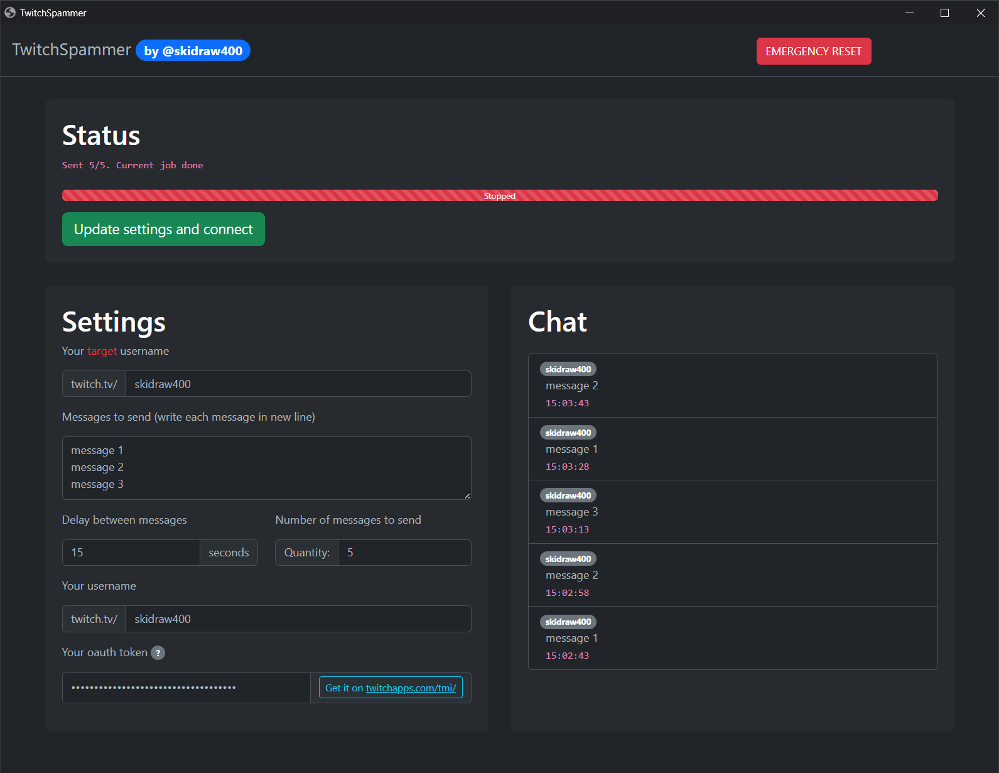

TwitchSpammer
Portable, multiplatform twitch chat spammer with beautiful UI.
Run it while you are streaming, and keep your viewers up to date, with your social media profiles links
- Beautiful UI
- Support for any modern browser (even mobile)
- Dark and light theme support
- Ability to automatically stop after sending x messages
About me
Hi, I'm Filip, I'm years old.
I am not (yet) a programmer, it's my hobby.
Technologies:
Python HTML CSS Arduino Kotlin WearOS Jetpack Compose Rust
All projects
This section is fetched automatically from my github.
About this webpage
This page contains marked.js library to display markdown files from my GitHub.Projects are fetched by custom.js script that I wrote. I'm not best in JS, but it's working.
Script downloads list of my public repos using GitHub's REST API
Then it display cards with readme.md from main branch.
Site is not made from any template etc, it's using only BootStrap v5.3.0,
and I don't want it to be a template, consider making your own website instead of using someone's